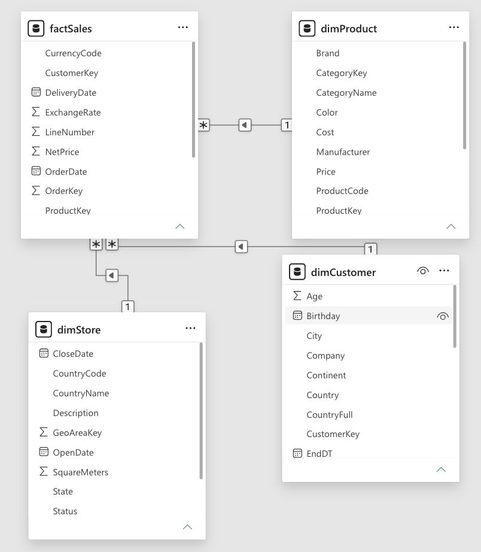
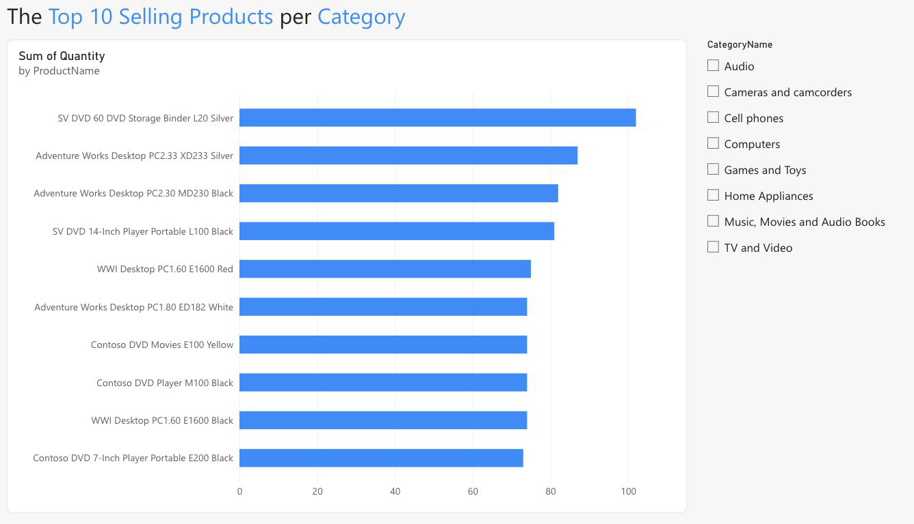
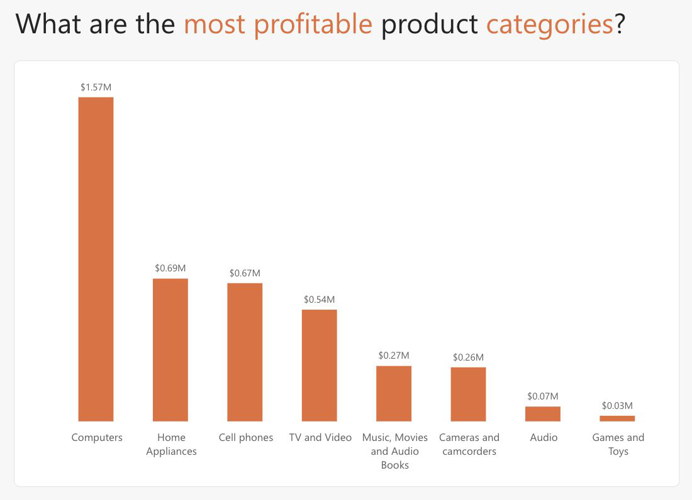
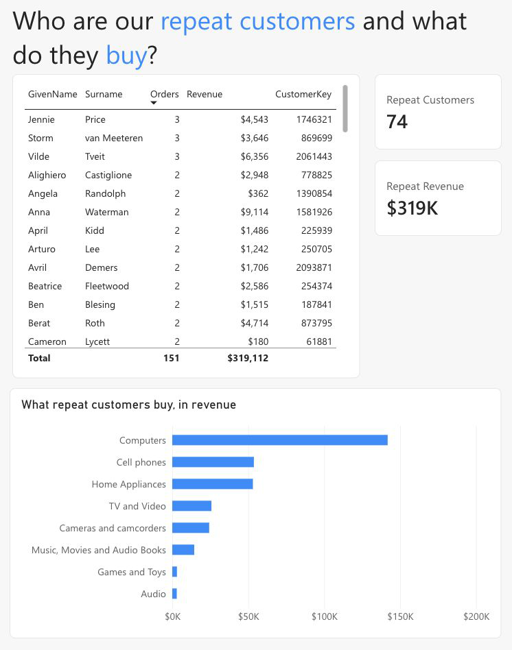
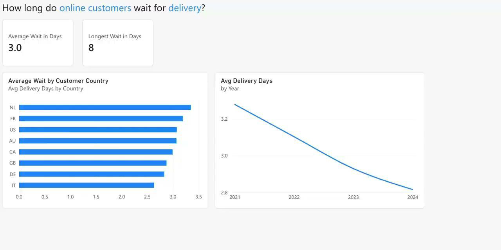

Contoso is a fictional global electronics retailer with four years (2021–2024) of sales from stores and an online shop.
I set up its star schema in Power BI, answered nine business questions with clear charts and visualizations per question, and wrote SQL queries for the key ones.
Role
Analyst (solo)
Tools
Power BI · SQL
Data
Contoso sales
Timeline
Fall 2026
How the data is organized
The data is set up as a star schema. factSales sits in the center with one row per item sold on an order,
and links to three dimension tables through ProductKey, CustomerKey and StoreKey.
dimProduct: what was sold (brand, category, color, list price and cost)
dimCustomer: who bought it (age, gender, city and country)
dimStore: where it sold, including the online store (country, size, open and close dates)
One product, customer or store can appear in many sales. Filters flow from the dimensions into the sales table,
so picking a category or country instantly updates every number in the report.

The data model in Power BI: sales in the middle, with products, customers and stores around it.
Questions and findings

What are our top-selling products by volume in each category?
The chart shows the 10 best-selling products by units sold, and the category slicer narrows it to any one department. Overall, DVD storage binders and desktop PCs move the most units.
What are our top-selling products by revenue?
The Adventure Works Desktop PC2.33 XD233 Silver brings in the most revenue, about $99K from 87 units. Choosing a category, like Cell phones or Audio, instantly re-ranks the top 10.
$99KTop product
87Units sold
What are our top-selling stores by revenue?
The online store alone outsells every physical store combined. Among physical stores, Contoso Store Nebraska leads, and the country slicer shows each market's leader, like Sachsen-Anhalt in Germany.
$3.92MOnline
$3.38MPhysical stores

Which product categories are the most profitable?
Computers are by far the most profitable category, earning more than twice as much as the next one, Home Appliances.
$1.57MComputers
$0.69MHome appliances

Who are our repeat customers, and what do they buy?
Jennie Price, Storm van Meeteren and Vilde Tveit are the most frequent repeat customers, with three orders each. Repeat customers spend the most on computers.
74Repeat customers
$319KTheir revenue

How long do online customers wait for delivery?
Delivery is getting faster every year, from about 3.3 days in 2021 to 2.8 in 2024. Customers in the Netherlands wait the longest.
3.0Avg days
8Longest wait
How have monthly sales and profit changed from 2021 to 2024?
Sales climbed through 2021 and peaked in February 2022 at about $421K in a single month. 2022 was the strongest year, then sales dropped sharply in early 2023 before leveling off. Profit follows revenue closely all the way.
$7.30MRevenue
$4.10MProfit
$3.18MBest year (2022)
Which age groups spend the most, and what do they buy?
Customers 65 and over spend the most of any age group, and computers are the top category for every age group. The shaded table makes the biggest age-and-category combinations stand out.
65+Top age group
$770K65+ on computers
Which genders spend the most, and where do they live?
Spending is almost evenly split between men and women. The decomposition tree breaks revenue down from gender to country to city, and the United States is the largest market for both.
52%Male
48%Female
The SQL behind it
Two of the report's answers, written as SQL queries against the same star schema.
Which product categories are the most profitable?
SELECT
p.CategoryName,
SUM(s.Quantity * (s.NetPrice - s.UnitCost)) AS Profit
FROM factSales AS s
JOIN dimProduct AS p
ON s.ProductKey = p.ProductKey
GROUP BY p.CategoryName
ORDER BY Profit DESC;
JOIN connects each sale to its product, so we know its category.
Profit for each sale = quantity × (selling price − cost), and SUM adds it up.
GROUP BY gives one total per category, and ORDER BY … DESC puts the most profitable first.
Who are our repeat customers?
SELECT
c.GivenName,
c.Surname,
COUNT(DISTINCT s.OrderKey) AS Orders,
SUM(s.Quantity * s.NetPrice) AS Revenue
FROM factSales AS s
JOIN dimCustomer AS c
ON s.CustomerKey = c.CustomerKey
GROUP BY c.CustomerKey, c.GivenName, c.Surname
HAVING COUNT(DISTINCT s.OrderKey) > 1
ORDER BY Orders DESC, Revenue DESC;
JOIN adds each customer's name to their sales.
COUNT(DISTINCT OrderKey) counts real orders. One order can have several product lines, so a plain count would overcount.
HAVING … > 1 keeps only customers with more than one order. It runs after grouping, which is why it isn't WHERE.
How this applies to your role
Data / business analyst
Turn a stakeholder's question into a query and a chart, and state the answer in one plain sentence.
BI developer
Build a star-schema model and an interactive Power BI report that people can filter and explore on their own.
Any data team
Cross-check a dashboard number in SQL before it reaches the person making the decision.